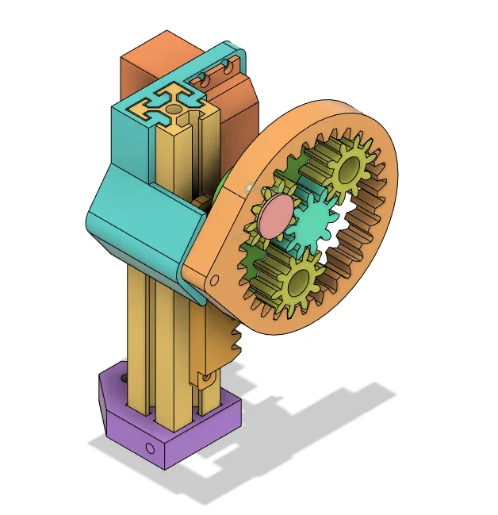
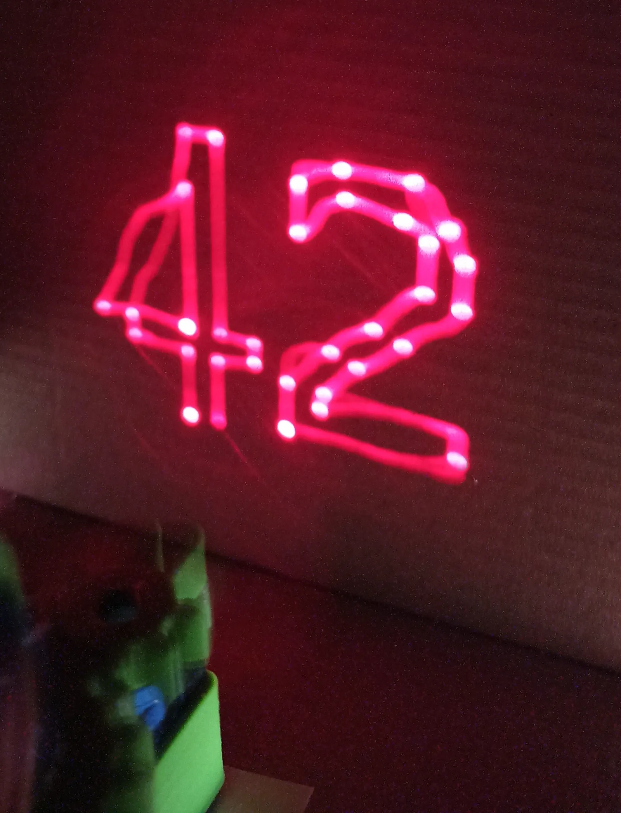
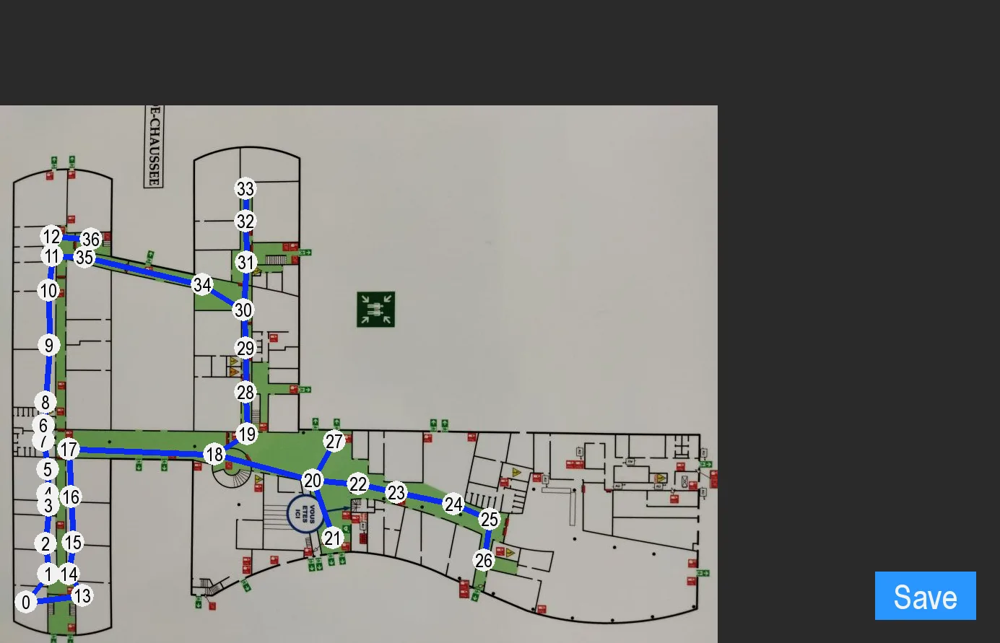
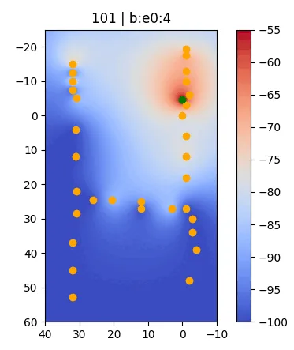

Computer Science and Robotics Club
Back in high school, I created a Computer Science and Robotics club in my school and assembled a team of 10 students. After failing to obtain funding from my school's administration, I contacted a local FabLab that let us use their machines and components for our projects, for free!
Accomplishments
- Won Electromaker of the Month award for our robotic hand project
- Made a jumping robot featuring a planetary gearset
- Made a pilotable laser pointer that allowed light painting with long exposure photography
- Made an indoor positioning and navigation system relying on wifi signal strength from different rooms
Skills
Gallery







